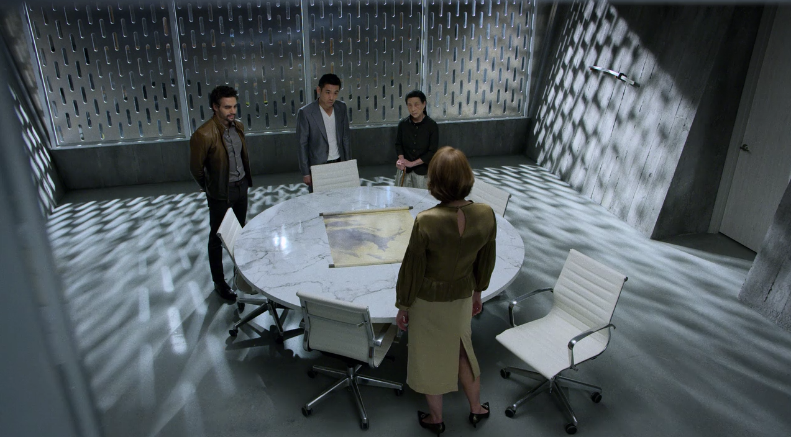
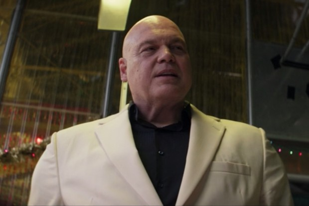
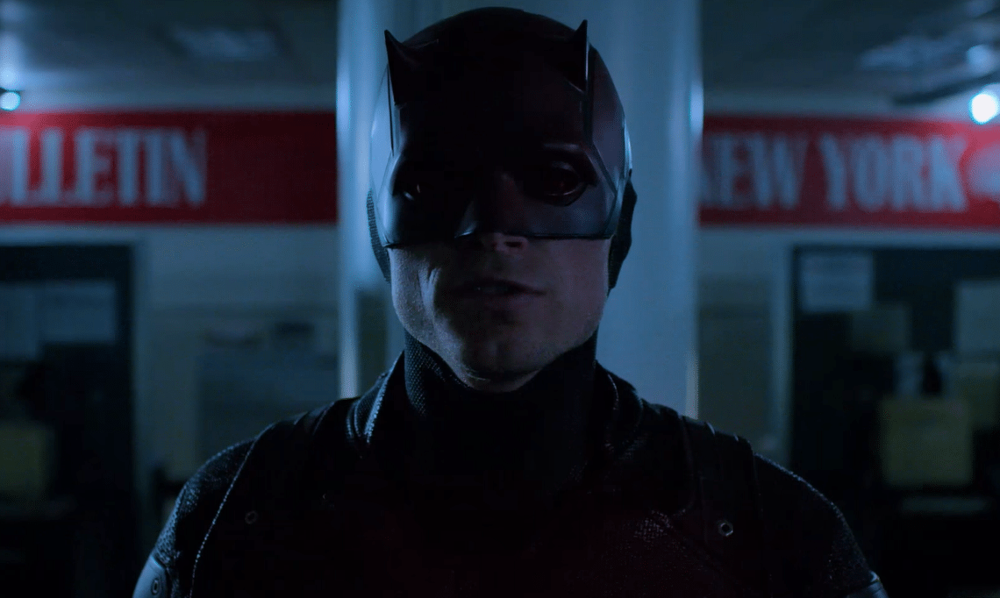

The Devil of Hell's Kitchen
The Daredevil is vicious and merciless towards criminals.
Although he refuses to kill, he is not afraid to break bones or torture his targets to get what he is after,
even if his targets are not criminals themselves. Due to his extremely violent nature as a vigilante, he
realizes that he has the potential to become the very thing he hates, and takes care to never cross that line.
Originating from his exposure to a radioactive isotope, which rendered him blind, Murdock's heightened senses were actually latent "gifts"
that the isotope unlocked which gives him superhuman smell, tactile sense, hearing, taste, balance and radar sense.
The New York Bulletin christens the 'Devil'
The Man Under The Mask
Matthew Murdock possesses a strong sense of morality and justice, which he carries with him in his
work as a lawyer and a vigilante. While professional, Matt is not without a sense of humor, and is
very easygoing with his friends. Quips about his blindness don't bother him, and he even frequently
jokes about it himself.
Despite this, when under stress, Matt pushes the people around him away,
attempting to take all responsibility upon himself to fix Hell's Kitchen. Although he tries to be
a pillar of strength and support for the people around him, Matt can only take so much pressure before he breaks down.
He also struggles with his internal feelings of anger, causing some (Foggy, Father Lantom, and even Matt himself)
to question whether he fights for the city or simply "wants an excuse to punch someone."
Matt Murdock in his office
Notable Enemies
The Hand
The Hand originated in K'un - Lun, when the five founders were banished from the city and have since lived on in the shadows for centuries, promoting their goal through wars, crime and influence on powerful people.
When the Hand came to New York City, the branch lieutenant Nobu Yoshioka used Wilson Fisk in order to bring to the city a Black Sky. However, his plan was interrupted by the vigilante Daredevil, and eventually, they had to stop their operation after Yoshioka's death. Members of the Hand hold a meeting
Kingpin
Wilson Grant Fisk is a powerful businessman and crime lord with an interest with controlling New York City. Having formed alliances with other criminal enterprises, Fisk then used the aftermath of the Battle of New York to gain power in the city, and attempting to rebuild Hell's Kitchen by destroying and gentrifying it.
His criminal activities brought him into a conflict with the vigilante Daredevil, as well as some of his partners who betrayed him, and he was arrested after his actions were leaked to the FBI. Wilson Fisk portrayed by Vincent D'Onofrio
Bullseye
Bullseye is a supervillain appearing in American comic books published by Marvel Comics. A psychopathic assassin, Bullseye uses the opportunities afforded by his line of work to exercise his homicidal tendencies and to work out his own personal vendetta against Daredevil. He is also an enemy of the Punisher.
 FBI Agent Benjamin Poindexter a.k.a Bullseye
Friends & Associates
Charlie Cox as Daredevil
(Appearances)
- Daredevil (Netflix : 3 seasons)
- The Defenders (Netflix : Mini - series)
- Spiderman : No Way Home (Cameo)
Charlie Cox in an interview